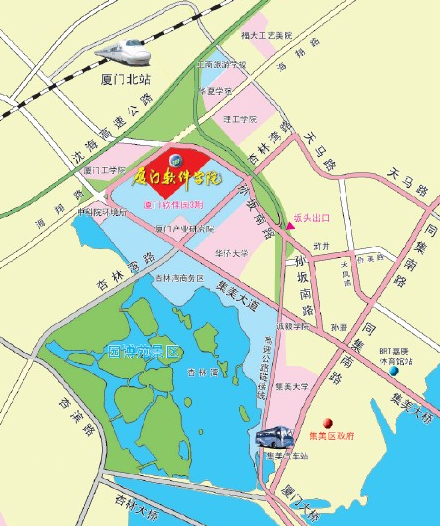

交通指南

1．岛内自驾车：厦门大桥-沈海高速引桥-坂头出口左转-孙坂南路-厦门软件学院（集美区孙坂南路1199号）；
2．从集美汽车站对面坐954路(思北--坂头)到软件学院站；
3．从火车站坐33路，44路，521路到SM 城市广场站转54路到软件学院站；
4．从集美学村坐415到软件学院站；
5．从厦门大学坐18路到龙舟池站转409到软件学院站；
6．坐BRT到嘉庚体育馆-坐连接线L21到浒井站-坐954路或409路到软件学院站。
地址：中国 福建省 厦门市 集美文教区 孙坂南路1199号
邮箱 361024 电话：（0592）5531111
版权所有@厦门软件职业技术学院
闽cp备08002985号-2
闽公网安 备35021102000010号